支払いに使うお金。輸送費の精算にも残しておきます。
01
まず、何を目指すゲーム？
4つの商会が、商機を取り合いながら都市に投資します。建物で資源を増やし、建設・上位化・公共事業などを通じて企業価値を高めましょう。最後の精算を終えた時点で、赤字でない商会を優先し、その中で企業価値を比べます。
工業の生産や、投資の支払いに使います。
商業で販売したり、投資の支払いに使います。
初期資源は資金2・資材1・商品0。手札は本人だけに表示されます。他商会の資源や都市への投資は公開情報です。途中の企業価値は自社分を確認できます。
02
1ラウンドの流れ
- 商機と手札全商機の順番を確認。ビッドありなら1位の回数を予測。
- カードを1枚ずつ4枚で順位を決め、商機の報酬を処理。全トリックを繰り返す。
- 監査・経済活動設定に応じ監査官を配置。市場・交渉の後、建物を好きな順で稼働。
- 投資を2巡自分の番ごとに1つの投資、またはパス。
- ラウンド末精算輸送費・通行料、都市発展と終了予定を確認。
1ラウンド目は6商機。通常は5商機。都市Lv3到達の翌ラウンドは一度だけ特別消費ブームの8商機です。新規正式1.0では32枚すべてを使い、各商会に8枚ずつ配られます。
大型投資には経済活動前・投資前に対象を選ぶものがあります。自分の操作が必要になると、画面の現在の操作に表示されます。ビッドの結果は全トリック終了時に判定します。
03
トリック：4枚で順位を決める
トリックは、4人が1枚ずつカードを出す小さな勝負です。最初に出す人をリード役、最初のカードの系統をリードスートと呼びます。
- 自分の手札にリードスートがあれば、その系統を出します（Must Follow）。
- なければ、ほかの系統を出せます。
- 4枚が揃ったら、切札のカード、リードスートのカード、その他のカードの順に強さを比べます。各区分では大きい数字が上です。
その他のカード同士で数字も同じなら、商業 → 工業 → 調達 → 行政の順で比べます。切札がない商機はノートランプです。開業ラウンドは商機ごとに切札が異なり、1商機だけノートランプがあります。
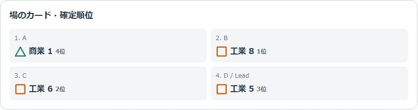
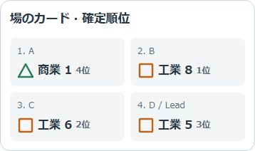
- 1. Dがリード
- 2. Bが1位
この実画面ではDが工業5でリードし、工業が切札です。Bの工業8が1位、Cの工業6が2位、Dが3位、Aの商業1が4位。Aは工業を持たないため、商業を出せています。
04
商機と手札を見比べる
先に全商機の順番を見て、「どこで強いカードを使うか」を考えます。カードの提出順と、商機の報酬内容は別の判断です。
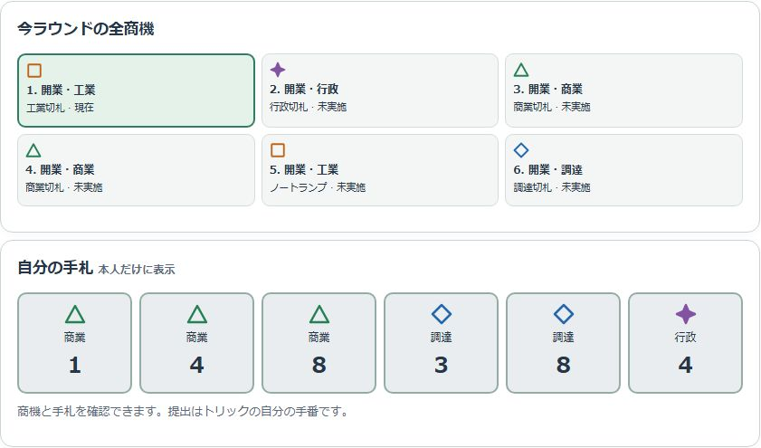
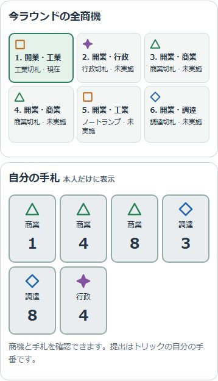
- 1. 全商機の順番
- 2. 自分だけの手札
- 商機の番号・名前・切札を確認します。現在の商機が強調され、終了分は控えめに表示されます。
- すぐ下の自分の手札を見比べます。並び順は商業・工業・調達・行政です。
- 商機を選ぶと、手札の下に報酬の詳細が開きます。
- トリック中の自分の番に、選択可能なカードを1枚提出します。出せないカードは理由を確認できます。
販売・加工・仕入れの任意交換はトリック直後に選択します。「使用しない」も可能です。販促・増産・大量仕入れ・開発・公共事業の優遇は、そのラウンドの後の行動で使います。画面上の報酬詳細と合法候補を確認してください。
05
建物で資源を回す
調達は資金を資材へ、工業は資材を商品へ、商業は商品を資金へ変えます。表示は調達 → 工業 → 商業ですが、使う順番は自由です。同じフェーズで生産した商品を、そのまま販売できます。
| 系統 | 下位建物 | 上位建物 |
|---|---|---|
| 調達 | 倉庫：資金1 → 資材2 | 物流センター：資金2 → 資材3／少量は資金1 → 資材2 |
| 工業 | 工房：資材1 → 商品2 | 工場：資材1 → 商品3 |
| 商業 | 店舗：商品1 → 資金3 | 商館：商品2 → 資金5／少量は商品1 → 資金3 |
基本は各建物1回／ラウンド。少量でも1回を使います。商機や大型投資による追加効果・追加稼働は別です。
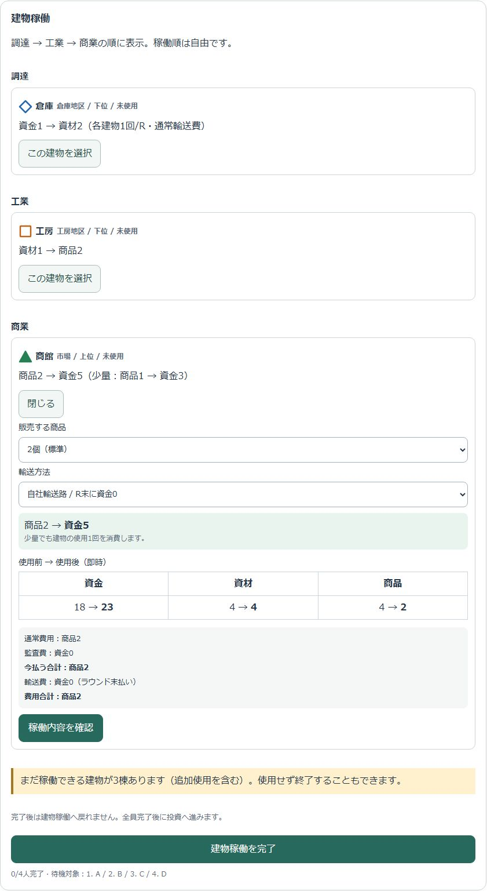
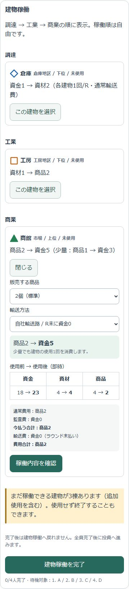
- 1. 数量を選ぶ
- 2. 資源の使用前後
- 3. 確認してから確定
- 使う建物を選択して開きます。
- 数量・追加効果・必要な輸送方法を選びます。
- 資金・資材・商品の3列で「使用前 → 使用後」を確認します。
- 「稼働内容を確認」の後、仕入れる・生産する・販売するボタンで確定します。選択を変更したら確認し直します。
- 全員が「建物稼働を完了」すると投資へ進みます。使える建物を残して完了することもできます。
06
投資は1手番に1つ、2巡
建設・上位化・輸送路・公共事業・大型投資・パスの6入口から選びます。対象、支払い、投資後の資源、企業価値への影響を順に確認します。
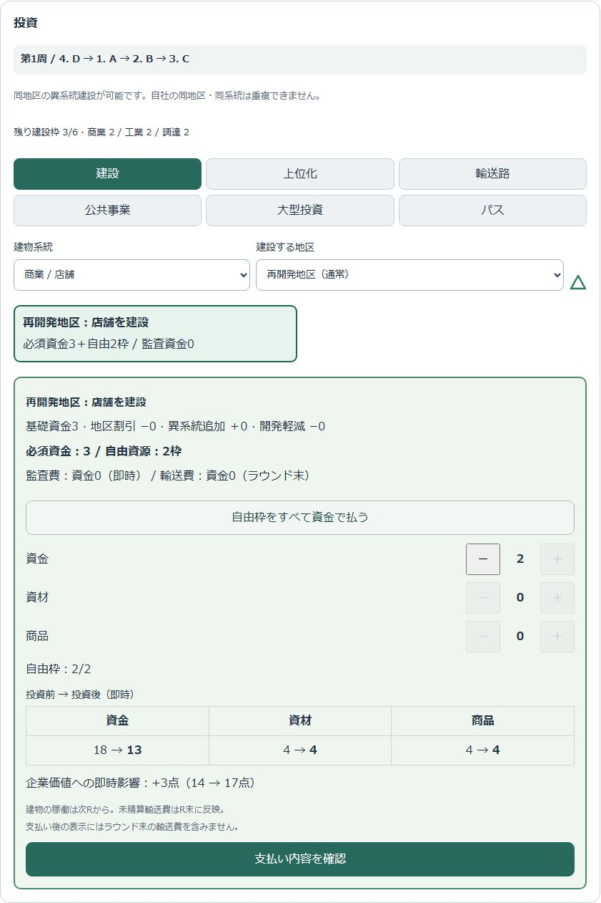
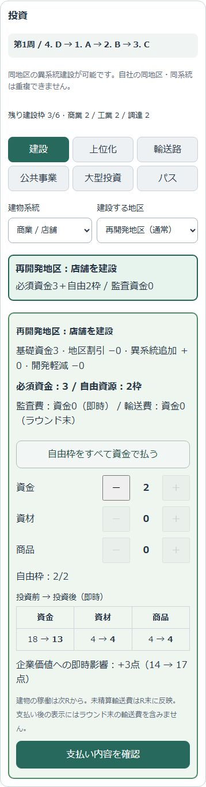
- 1. 6つの入口
- 2. 投資対象
- 3. 自由資源を調整
- 4. 投資後の資源
通常の建設・上位化は必須資金3＋自由資源2枠。自由枠は資金・資材・商品を1個ずつ組み合わせて払えます。地区や商機の補正は必須資金へ反映され、監査費・輸送費は別に表示されます。
| 地区と建物の関係 | 建設の補正 | 上位化の補正 |
|---|---|---|
| 内周・同系統 | 必須資金−1 | なし |
| 外周・同系統 | なし | 必須資金−1 |
| 系統のある地区・異系統 | 必須資金＋1 | なし |
| 系統なし／自社専用地区 | なし | なし |
通常の建物上限は自社6棟、同系統3棟。同地区に自社の同系統建物を重複して建てることはできません。他社の同系統建物は別です。事業拡張計画では専用地区1枠が増えますが、追加建設も同系統上限に数えます。
パスも投資手番を1回消費し、取り消せません。 建設した建物の稼働は次のラウンドからです。
07
都市マップと輸送費
都市は8地区・通常21建物枠。地区の配置・枠数はゲーム中に変わりません。外周地区は都市Lv2到達の翌ラウンドから使えます。
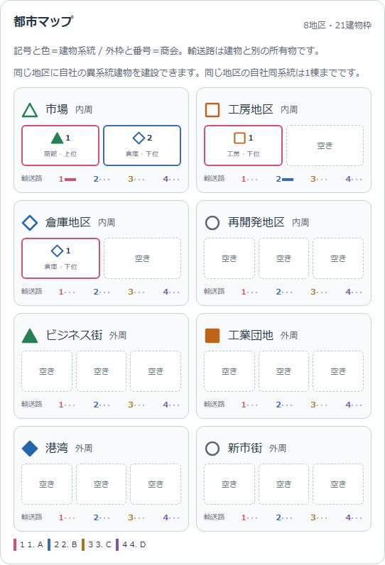
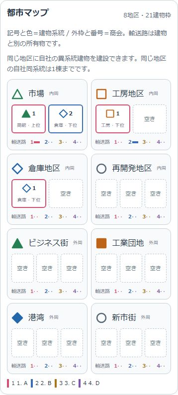
- 1. 地区と空き枠
- 2. 建物の所有者
- 3. 輸送路の所有者
建物の系統は記号・色、所有商会は番号・外枠で表します。上位／下位も文字で確認できます。建物と輸送路は別々の所有物です。地区名を選ぶと補正の説明が開き、自社建物を選ぶと対応する稼働・上位化操作へ移動します。
| 輸送方法 | 1回の費用 | 支払い時点 |
|---|---|---|
| 自社の輸送路 | 資金0 | なし |
| 他社の輸送路 | 資金1 | ラウンド末に路線所有者へ |
| 公共輸送 | 資金2 | ラウンド末に精算 |
建物の稼働・上位化では輸送費を見積もります。建設には輸送費がかかりません。自社専用地区は輸送費0・監査費0です。輸送路の敷設費用は投資候補に表示された見積もりを確認してください。
物流独占や封鎖があると、選べる輸送方法が制限されます。独占路線が封鎖された場合は迂回できません。まだ精算していない通行料収入を、今の支払いには使えません。
08
公共事業：完成すると全員へ還元
各事業は6枠です。投資1回で1枠に拠出し、6枠すべてが埋まると完成します。最後に拠出した商会だけでなく、全拠出者が自社枠数に応じた得点と資金還元を得ます。
未完成なら得点0・還元なし。完成者への追加点はありません。完成すると都市発展＋5。追加の受取操作は不要です。
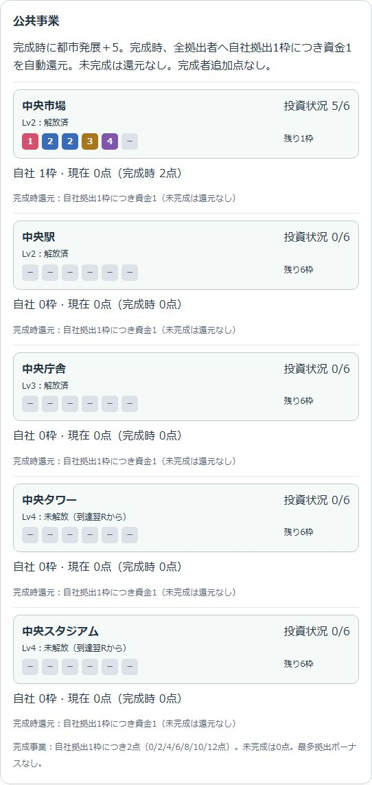
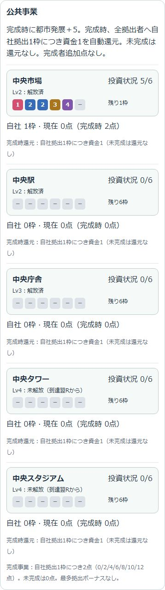
- 1. 6枠の所有者
- 2. 現在点と完成時点
| 自社枠数 | 0 | 1 | 2 | 3 | 4 | 5 | 6 |
|---|---|---|---|---|---|---|---|
| 完成得点 | 0 | 2 | 4 | 6 | 8 | 10 | 12 |
| 完成時資金 | 0 | 1 | 2 | 3 | 4 | 5 | 6 |
例：完成時の所有枠がA2・B2・C1・D1なら、得点は4・4・2・2、資金還元は2・2・1・1です。最後の枠に必要な費用は先に支払います。完成時にもらう資金を先払いに使うことはできません。
| 事業 | 解放Lvの翌R | 6枠の費用 |
|---|---|---|
| 中央市場 | Lv2 | 資金2の枠×4、資材1の枠×1、商品2の枠×1 |
| 中央駅 | Lv2 | 資金2の枠×4、資材2の枠×1、商品1の枠×1 |
| 中央庁舎 | Lv3 | 資金3の枠×5、資材1＋商品1の枠×1 |
| 中央タワー | Lv4 | 資金4の枠×5、商品2の枠×1 |
| 中央スタジアム | Lv4 | 資金4の枠×5、資材2の枠×1 |
公共事業商機・優先契約・権益買収
公共事業商機の1位は拠出1枠の必要資源1削減＋成立後資金1、2位は通常拠出後に資金1。完成時還元とは別です。未拠出のままなら受け取れません。監査費は別途必要です。
優先契約の初回拠出軽減と商機の軽減は併用できます。中央庁舎の複合枠では商機軽減は資材に適用し、優先契約の軽減はその後に残る資源から適用します。費用の下限は0です。
権益買収で枠の所有者が変わった場合は、完成時の所有者へ得点・還元を反映します。大型投資の費用や対象条件は変わりません。
09
大型投資を読む
大型投資ありの設定では、通常2枚と対抗1枚が市場に並びます。都市Lv3から購入でき、購入で投資1回を使い、原則として翌ラウンドに発動します。最終ラウンドには購入できません。
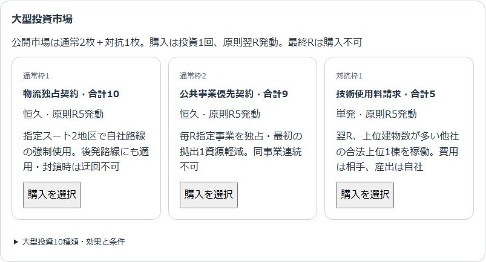
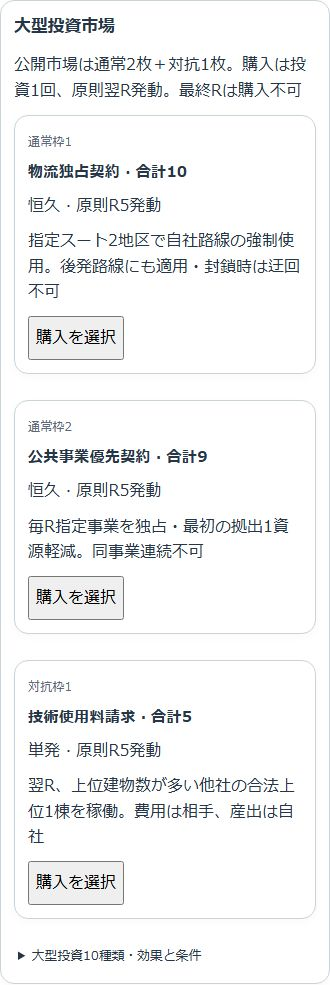
- 1. 名前と合計費用
- 2. 恒久・発動R
- 3. 購入を選択
- 市場で名前・費用・恒久／単発・発動予定を確認します。
- 購入候補を選び、必須資金と自由資源を確認します。
- 購入済みは「所有済み大型投資を確認」で、発動予定・有効・使用済み・不発を確認します。
- 対象指定の番になったら、合法な対象を選び「この対象で効果を確定」を押します。
| 合計価格 | 必須資金 | 自由資源 |
|---|---|---|
| 5 | 3 | 2 |
| 8 | 4 | 4 |
| 9 | 5 | 4 |
| 10 | 5 | 5 |
10種類の効果と価格
| カード | 価格 | 効果の要点 |
|---|---|---|
| 事業拡張計画 | 10 | 翌Rから自社専用地区1枠。建設は通常投資で行い、無料ではない。 |
| 産業高度化計画 | 8 | 指定系統の自社建物能力の主要産出＋1。 |
| 高度設備導入 | 8 | 毎R、自社上位建物1棟を追加1回使用。費用は通常どおり。 |
| 監査受託事業 | 8 | 他社の監査費を受領。自社は免除だが免除分の収入はない。 |
| 物流独占契約 | 10 | 指定スート2地区の自社路線を強制使用。後発路線にも適用、封鎖優先。 |
| 公共事業優先契約 | 9 | 毎R指定事業を自社のみ拠出可にし、最初の拠出を1資源軽減。同事業連続不可。 |
| 産業活動奨励金 | 5 | 翌R、建物数が自社より多い他社の能力使用に応じ銀行から資金。 |
| 技術使用料請求 | 5 | 翌R、上位建物数が自社より多い他社の合法な上位1棟を稼働。費用は相手、産出は自社。 |
| 広域物流規制 | 5 | 翌R、路線数が自社より多い全他社の全路線を封鎖。 |
| 公共事業権益買収 | 5 | 翌R、全事業の拠出枠数が自社より多い他社の未完成枠1つを移転。 |
対象条件は発動時に判定します。対象のない対抗投資は不発・破棄。技術使用料による稼働は相手の通常使用を消費しますが、追加使用権は残します。産業高度化の系統は購入時に指定します。
10
ビッドと監査官
ビッドあり
ラウンドの商機と手札を見て、カードの強さで1位になる回数を予測します。全員が提出するまでは本人だけに見え、揃うと公開されます。全トリック終了時に的中すれば予測成功点＋1です。信用収縮でも予測はカードの強さの1位を数えます。
監査官あり
R2以降、全トリックの結果から配置権を決めます。報酬対象外の回数が多い商会 → 平均順位が悪い商会 → そのR最初のリード役から時計回りに近い商会の順です。任意交換を辞退しても、報酬対象だった事実は変わりません。
指定系統の地区での稼働・上位化、または指定された公共事業への拠出に、1回あたり資金1の監査費を即時に払います。数量によって増減しません。建設と自社専用地区は対象外です。
11
精算して、最終結果を読む
ラウンド末に輸送費・通行料を精算し、都市発展を確認します。建設＋2、上位化＋1、輸送路＋1、公共事業完成＋5。発展16・32・64でLv2・3・4へ進み、1回の精算で上がるのは1段階までです。
| Lv4の初到達 | 終了A | 終了B |
|---|---|---|
| R8まで | R11 | R12 |
| R9 | R12 | R13 |
| R10以降／未到達 | R13 | R14 |
最終ラウンドはヘッダーで確認できます。最終精算を終えたら、まず赤字でない商会を優先し、以下の順に比べます。
- 企業価値
- 事業資産点（建物＋輸送路＋公共事業）
- 建物点
- 公共事業点
すべて同じなら同順位です。
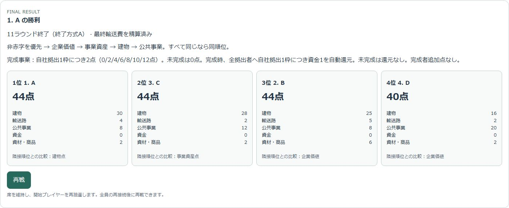
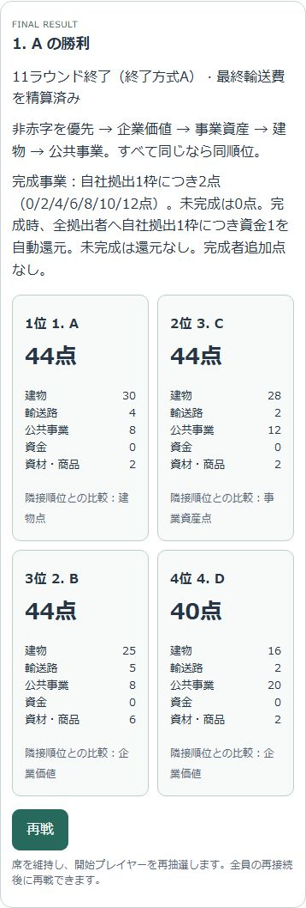
- 1. 同点判定の順
- 2. 企業価値
- 3. 得点の内訳
この実対局の例ではA・C・Bが全員44点。AとCは事業資産42点で並び、建物点30対28でAが上位です。Bは事業資産38点のため、その次になります。
| 企業価値の内訳 | 得点 |
|---|---|
| 下位／上位建物 | 1棟3点／5点 |
| 輸送路 | 1本1点、最大8点 |
| 完成公共事業 | 自社1枠2点 |
| 資材＋商品 | 合計4個につき1点 |
| ビッド的中 | 1回1点 |
| 残資金／大型投資カード自体 | 0点 |
完成還元の資金は、資金そのものとしては点になりません。その後の建設などへ使える資金です。
12
画面で迷ったとき
PCとスマホで何が違う？
PCは左に現在の操作、右に商会の公開情報や都市。スマホは「手番／都市／履歴」の3タブです。資源と自社価値、R末資金見込は上部で確認できます。
カードや投資を選べない
自分の手番、Must Follow、必要資源、地区解放、建物上限、監査費、物流封鎖を確認します。投資候補と見積もりはサーバーの状態に従います。
全員の操作が終わらない
「完了 n/4人」と待機対象を見ます。未使用建物があっても、自分の完了ボタンは押せます。押した後はそのフェーズへ戻れません。
接続が切れた
接続が戻るとサーバーの状態を復元します。切断が続くと60秒後にBOTが代行します。復帰時は画面の現在の状態を確認してください。
新しい対局を始める
TOPの「1人で遊ぶ／部屋を作る／部屋に入る」から進みます。新規の商都開発は正式1.0。終了A/B・大型投資・ビッド・監査官の16設定を選べます。ロビーでは部屋コード、参加者、ホスト、NPC、準備状態と開始不可理由を確認します。
保存した旧対局の得点が違う
旧v0.5・NEXT・以前の正式保存状態は途中で新ルールへ置き換えません。表示された版・得点・還元方式に従って継続します。新規正式対局としての再戦には新しい標準が適用されます。
13
レビューで確認いただきたいこと
この資料は文章版原案と実装を照合した未承認のWebルールブック案です。通常のルール画面・本番サイトへの導線はありません。
- D1：費用補正の「同系統」を、地区の系統との一致として説明してよいか。
- D2：異系統建設＋1が内周・外周双方にあることを、地区別の表へ整理する説明でよいか。
- D3：ビッド判定を「全トリック終了時」とする実装準拠の訂正でよいか。
- 初心者向けの説明量、画面の注釈、PC・スマホ・印刷での読みやすさ。
公共事業の得点2点／枠と完成還元Bは追加確定指示を反映済みです。この資料の承認待ちとは別です。第1〜3次の不採用NPC調整は採用していません。
制作記録・根拠
参照：文章版「商都開発 正式1.0 文章版ルールブック 完成稿.docx」8ページ。実装：PR #42、アプリ0.24.0、コード d99cd9d4c3d422090c07426502e627ce5e46c4d6。仕様差異の詳細は同フォルダーのcommercial-hub-rulebook-plan.mdを参照。
画面はWindowsの検証環境で実コンポーネントを描画。建物・投資・都市・公共事業は操作説明用のテスト状態、トリックと結果はCore/NPCによるシード54173の完走状態。商会名A〜Dはテスト名です。他人の手札や秘匿情報を表示する改造は行っていません。
PC幅1440px、スマホ幅390px。パネル全体の撮影では固定ヘッダーが画像途中へ重なることを防ぐため撮影用の縦幅を拡張し、実パネルを切り出しています。スマートフォン実寸の操作検証は別のE2Eで実施。番号・矢印は元画像を加工せずHTML/SVGで重ねています。16画面の描画エラー・横はみ出しは0。記録はassets/capture.json。